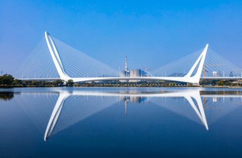

新首钢大桥
新首钢大桥就像一座兼具力与美的钢铁艺术品，它像一个巨人横跨在永定河之上。通过倒"U"形钢塔时，桥两侧一根根倾斜的钢铁拉索缓缓奔向身后，它们就像一个个强有力的手拉着这个庞然大物。大桥的豪气、极致的现代感与艺术气息在此刻便体现得淋漓尽致。然而，不到5分钟的功夫，就已经跨过了新首钢大桥，从门头沟来到了石景山古城。
新首钢大桥的通车，是长安街西延线的全线贯通，十里长安街瞬间变成了百里长安街。记得在以前，从门头沟城区往东去石景山、西长安街办事，需要从首钢园区的南北两侧绕一个大弯儿才能到达。不堵车的话，最少也得需要30分钟。而现在，新首钢大桥通车以后，竟然只需几分钟，真是方便了很多。
新首钢大桥的建成，它成为了北京西部地标性建筑，为北京西部新增一条进出中心城区的快速通道，它及其方便了北京城西边的百姓，给我们当地的百姓生活带来了福音。交通通畅发达了，百姓的幸福指数直线规升。我越来越热爱自己的家乡了，作为当地人，我感无比的幸福与喜悅！
